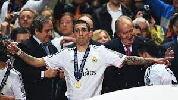
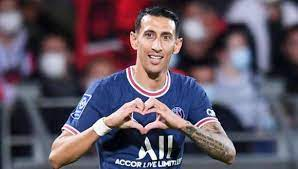

Biografia

Ángel Di María es un futbolista argentino nacido el 14 de febrero de 1988 en Rosario, Argentina. Es conocido por su velocidad, habilidad y versatilidad en el campo de juego. Di María ha tenido una exitosa carrera tanto a nivel de clubes como a nivel internacional. Comenzó su carrera profesional en el club Rosario Central en Argentina, donde rápidamente llamó la atención por su talento y desempeño destacado. En 2007, fue transferido al SL Benfica de Portugal, donde continuó mostrando su habilidad y se convirtió en una pieza clave del equipo.
En 2010, Di María dio el salto a uno de los clubes más grandes del mundo, el Real Madrid. Durante su etapa en el club español, Di María ganó numerosos títulos, incluyendo la Liga de Campeones de la UEFA en 2014, donde fue una figura clave en la final. Su velocidad, regate y habilidad para asistir y marcar goles lo convirtieron en un jugador fundamental en el esquema del Real Madrid. Después de cuatro exitosas temporadas en el Real Madrid, Di María fue transferido al Manchester United en 2014. Sin embargo, su paso por el club inglés fue breve y en 2015 se unió al París Saint-Germain (PSG) de Francia. En el PSG, Di María ha continuado demostrando su calidad, ayudando al club a ganar múltiples títulos de la Ligue 1 y otras competiciones domésticas.
A nivel internacional, Di María ha representado a la selección argentina en numerosas ocasiones. Ha participado en varias ediciones de la Copa América y en la Copa del Mundo de la FIFA. Su velocidad y habilidad en el campo lo han convertido en un jugador importante para el equipo nacional. En resumen, Ángel Di María es un futbolista argentino talentoso y versátil, reconocido por su velocidad, habilidad en el regate y capacidad para asistir y marcar goles. Ha tenido una destacada carrera en clubes como el Real Madrid y el PSG, además de representar a la selección argentina en competiciones internacionales.